Asesoramiento personalizado
Una propuesta que nace de escucharte, entender tu idea y acompañarte en cada decisión.

¿Le damos PLAY a ese momento?
LA EXPERIENCIA
Todo empieza mucho antes de que suene la primera canción.
Quiero conocer tu historia, entender lo que imaginás y acompañarte para que cada momento de tu evento tenga sentido. La mejor fiesta empieza con una buena planificación.
Escuchamos tus ideas, tus gustos y aquello que hace único tu momento.
Definimos juntos el clima musical y los momentos que querés destacar.
Coordinamos los detalles para que, llegado el día, puedas dedicarte a disfrutar.
LA EXPERIENCIA
Cuando llega el gran día, lo importante es vivirlo.
Estoy ahí para acompañar cada momento, conectar con la energía de tus invitados y hacer que todo fluya. La música, las palabras y cada sorpresa se unen para crear una experiencia que se sienta auténtica.
La música acompaña lo que está pasando y va construyendo la energía de la fiesta.
La conducción y la animación conectan a las personas sin quitarle protagonismo a tu historia.
Estoy pendiente de los tiempos y los detalles para que puedas entregarte por completo a tu celebración.
KENN · SERVICIOS
Una propuesta que nace de escucharte, entender tu idea y acompañarte en cada decisión.
Organizamos los momentos importantes y sus tiempos para que todo fluya de manera natural.
La música que acompaña cada instancia, conectando tu estilo con la energía de la fiesta.
Una conducción cercana y cuidada para darle protagonismo a cada momento especial.
Una voz que presenta, conecta y acompaña cada parte del evento.
Dinámicas e interacción para crear una celebración participativa y llena de energía.
Atención a cada detalle durante el evento para que vos puedas dedicarte a disfrutar.
By Ángeles Chatelain
By Ángeles Chatelain